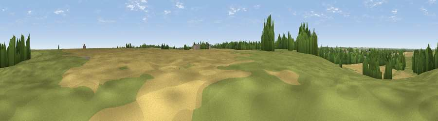

Viewpoint near Woodwalton
#42109 in England · top 21% of its area beats it · near WoodwaltonWhere it is
The exact computed spot (TL 22004 80445). Click the marker for map links.
The view, rendered

A 360° render of this exact spot computed from the terrain model, tree cover and land cover — summer colours, afternoon light, calibrated against photographs of famous viewpoints. Real trees, hedges and buildings will differ in detail.
The panorama
Grey silhouette: terrain skyline in each direction (720 bearings, Earth curvature and refraction included). Dashed green: skyline with trees (+15 m) and buildings (+8 m) as obstacles. Blue strip: how far the ground is visible on each bearing.
Where the view opens
Wedge length = distance to the farthest visible ground on that bearing (vegetation-aware). Rings at 10, 25 and 50 km.
What fills the view
48% grassland · 34% cropland · 16% woodland · 2% built-up
Angular shares of the visible panorama (visual magnitude), not map area. Landscape diversity 0.48 (0–1 Shannon).
Key numbers
More beautiful places nearby
The staircase of upgrades: each row has a higher view potential than everything closer. Driving times are estimates from straight-line distance, calibrated against real road routing — check an actual route before setting out.
| Place | Direction | Drive | Score |
|---|---|---|---|
| Viewpoint near Woodwalton | ENE · 1 km | ~2 min | 29.3 |
| Viewpoint near Sawtry | WNW · 6 km | ~12 min | 38.0 |
| New Farm Hill | SSE · 31 km | ~48 min | 41.3 |
| Hill summit | S · 31 km | ~49 min | 43.8 |
| Viewpoint near Finedon | WSW · 32 km | ~49 min | 44.8 |
| Viewpoint near Rockingham | WNW · 36 km | ~55 min | 48.7 |
| Viewpoint near Stapleford | SE · 38 km | ~57 min | 52.9 |
| Viewpoint near Royston | SSE · 42 km | ~62 min | 56.6 |
52.40842, -0.20787 · source: osm viewpoint · position refined by local search. Computed location — check access rights before visiting.